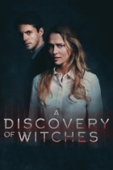

|  |
Открытие ведьмA Discovery of Witches (2018 — ...) |
|
8.7
|
|
|
Британский телесериал, основанный на романе «Открытие ведьм» из трилогии Деборы Харкнесс «Все души». Премьера сериала состоялась 14 сентября 2018 года на телеканале Sky One. Диана Бишоп — историк и ведьма поневоле — случайно обнаруживает заколдованный манускрипт в оксфордской библиотеке. Чтобы раскрыть содержащиеся в книге тайные знания о магических существах, она вынуждена вновь погрузиться в мир магии. Ей предлагает свою помощь Мэттью Клермонт, таинственный генетик и по совместительству вампир. Вопреки многовековому недоверию между ведьмами и вампирами, они решают вместе защитить книгу и раскрыть таящиеся в ней тайны, противостоя угрозам сверхъестественного мира. |
Промо к сериалу:
| Сезон 1 | ||
|---|---|---|
| 1x01 | Серия 1 | 14 сентября 2018 |
| 1x02 | Серия 2 | 14 сентября 2018 |
| 1x03 | Серия 3 | 14 сентября 2018 |